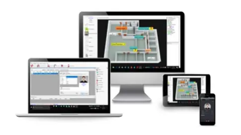
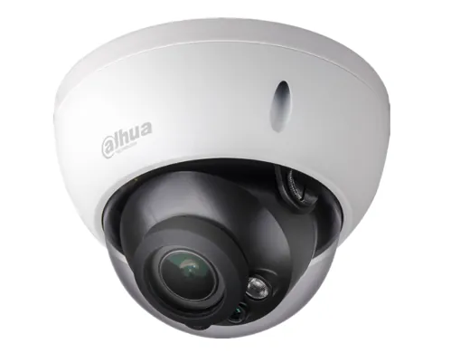

Contrôle d’accès : votre solution sécurité
Qu’est-ce qu’un système de contrôle d’accès ?
Quand vous commencez à réfléchir à la sécurisation de votre établissement, vous allez nécessairement entendre parler de contrôle d’accès. Mais du coup à quoi sert réellement un contrôle d’accès ?
Le contrôle d’accès désigne une solution technique qui permet d’assurer et gérer la sécurité de son personnel des visiteurs et de son bâtiment.

A quoi peut-on lier un contrôle d’accès ?
Une fois que vous aurez défini un contrôle d’accès, va venir le moment de choisir les éléments auquel il va être raccorder. D’une part vous pourrez le lier à des solutions de portes et de serrures. D’autres part, vous allez pouvoir le relier à un système de vidéosurveillance. Enfin le contrôle d’accès peut également être raccordé à un système d’alarmes.
A quoi sert un contrôle d’accès ?
Vous vous demandez peut-être à quoi cela peut servir et pourquoi ne pas vous limiter à une caméra et une alarme. Il s’agit là d’éléments qu’on peut lier à un contrôle d’accès mais ça ne représente qu’une partie de ce qu’il peut faire.

Définir les droits d’accès : l’une des utilités d’un contrôle d’accès et de pouvoir définir les droits d’accès aux personnes. Vous pourrez ainsi autoriser des accès spécifiques à chaque personne que cela soit en fonction des pièces, des tranches horaires et de contrôler leur bonne entrée ou sortie.
Connaître les nombres de personnes en temps réel : aux vues de la situation sanitaire actuelle, ce point est devenu un vrai enjeu. Et le contrôle d’accès y répond parfaitement ! Vous allez pouvoir en temps réel savoir où sont les personnes, depuis combien de temps. Cela vous permettra de gérer les flux en fonction des pièces.
Être alerté en cas d’intrusion : le contrôle d’accès étant lié à vos différents systèmes de sécurité, il pourra vous avertir dès qu’une intrusion sera détectée.
Faire de la maintenance préventive : le contrôle d’accès pourra vous avertir de l’état du matériel pour éviter les pannes ou les détecter.
Contrôler à distance : la majorité des systèmes de contrôle d’accès vous permet d’y avoir accès depuis votre smartphone. Rien de plus pratique pour garder un œil sur ses locaux !
Comment choisir son contrôle d’accès ?
Les systèmes de contrôle d’accès sont nombreux et il n’est pas évident pour un non-connaisseur de pouvoir choisir le système le plus adéquat. En fonction de la structure du bâtiment, de vos attentes et de votre matériel déjà installé tous les systèmes ne seront pas forcement adaptés.
Il faudra aussi que vous définissiez les différents points que doit gérer votre contrôle d’accès. En effet, son utilisation est vaste et dépendra de vos objectifs principaux : contrôler les accès, réduire les risques d’intrusion et/ou le cas échéant être averti directement.
C’est pourquoi, il est important de se faire accompagner dans le choix et l’installation d’un tel système.
En effet, l’intégralité de votre sécurité dépendra de votre contrôle d’accès et de son installation.
Ainsi Plateo pourra vous accompagner et vous proposer une solution personnalisée et optimisée à votre situation.
En résumé, le contrôle d’accès sera le meilleur garant de votre sécurité. Il gérera les accès, les intrusions, les vidéosurveillances et les alarmes. Ainsi, il est important de ne pas négliger le choix de son contrôle d’accès et son installation.